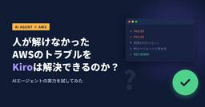
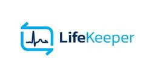
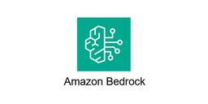

TechHarmony
https://blog.usize-tech.com
エンジニアブログ by SCSK
フィード

Amazon QuickからクロスアカウントAuroraへ接続してみた
TechHarmony
こんにちは、まつほです。 前回、Amazon Quickでコスト分析をしてみる記事をアップしました。 しかし、どうせなら都度CSVを取得するのではなく、Auroraに蓄積したコストデータを使って分析したい！ というわけで […]
1日前

人が解けなかったAWSのトラブルをKiroは解決できるのか？ ― AIエージェントの実力を試してみた
TechHarmony
皆さんこんにちは！ SCSK株式会社の安藤です。 チームで画面を見ながら原因を探しても、何が悪いのかわからない。そんなAWSのトラブルを、AIエージェント「Kiro」に任せたらどうなるのか。その答えを、実際に体験する機会 […]
2日前

code-server に Kiro CLI と Kiro Crew を同居させ Amazon Cognito で MFA 認証をさせる – アーキテクチャ編
TechHarmony
こんにちは、広野です。 以前、code-server を nginx で HTTPS 化して Amazon Cognito で MFA 認証をさせる構成を紹介しました。 code-server を nginx で HTT […]
3日前
「AI攻撃 vs マイクロセグメンテーション」自律型AIによる攻撃の実態と、ラテラルムーブメントを断つマイクロセグメンテーションの真価
TechHarmony
フロンティアAIによって高度化・高速化・広範囲化されたサイバー攻撃が後を絶たないですが、アンソロピック（Anthropic）社のサイバー検証プログラム（Cyber Verification Program）への参加を通じ […]
4日前
仮想専用サーバーサービスの不正アクセス事案から学ぶインフラ設計の落とし穴と「能動的サイバー防御」時代のセキュリティ教訓
TechHarmony
2026年9月より不正アクセス・情報漏えい事案が相次いでいますが、某インターネット企業の仮想専用サーバー（VPS）サービスへの不正アクセスは「認証」と「認可」のタイムラグの構造的な課題を浮き彫りにしました。エンドユーザの […]
4日前

AWS と Vanilla JS で問い合わせフォーム付き静的 WEB サイトをつくる
TechHarmony
こんにちは、広野です。 以前、以下の記事を書きました。 https://blog.usize-tech.com/serverless-webform-on-aws/ その当時からだいぶ時間が経っていたので、セキュリティ対 […]
5日前
ISMAP認定クラウドサービス障害の教訓：認証依存リスクの解体とサプライチェーンBCPの再設計
TechHarmony
日本国内のクラウドサービスが、ランサムウェア被害を受け、多くの企業・自治体のサービスに甚大な障害が発生しました。JR東日本の会員向けメール配信サービスなどで一時的な不具合が生じ、個人情報の漏えい可能性や管理ポータルでの不 […]
5日前

APTは「どこの国」の仕業か？ ディープラーニングがマルウェアを94.6%で見分けた実験
TechHarmony
みなさん、こんにちは。SCSKの石井です。 先月、あるお客様のCSIRT責任者から、こう聞かれました。 「この攻撃、どこの国なんですか」。 私は即答できませんでした。ログにも検体にも、犯人の国籍は書いていないからです。 […]
5日前

【Catoクラウド】Split Tunnelがアプリケーション・FQDN単位で指定可能に！
TechHarmony
こんにちは、Cato担当 中川です。今回の記事ではSplit Tunnelの機能強化について取り上げます。 「Catoに接続しているとWeb会議が重い気がする」というご相談は、導入前のお客様からも運用中のお客様からもよく […]
5日前

【日常運用・障害試験で役立つ！監視・通知・トラブルシューティング術 #3】これで安心！LifeKeeperの障害試験とバックアップ・リストア手順：実例から学ぶ確実な復旧への道
TechHarmony
LifeKeeperの『困った』を『できた！』に変える！サポート事例から学ぶトラブルシューティング＆再発防止策 こんにちは、SCSKの前田です。 いつも TechHarmony をご覧いただきありがとうございます。 連載 […]
5日前

Microsoft 365にバックアップは必要？情シスが知るべき3つのリスクとRubrikの対策
TechHarmony
Microsoft 365は、Exchange Online、SharePoint、OneDrive、Teamsなどを通じて、企業の業務に欠かせないデータを扱うサービスです。 近年、ランサムウェアやアカウント侵害の標的は […]
5日前

Amazon Bedrock Managed Knowledge Baseは縦書きドキュメントを読み込める？
TechHarmony
こんにちは、ひるたんぬです。 旅行に行った友人や家族から「小麦を主原料とした焼菓子」をお土産としていただくことがしばしばあります。 さて、これは「クッキー」なのでしょうか？それとも…「ビスケット」？ ここでは、「一般社団 […]
5日前
20年以上ネットワークに携わってきたエンジニアがCatoを担当してみた
TechHarmony
こんにちは。今年度からCato Cloudを担当することになりました斎須です。 私はこれまで20年以上、ネットワークエンジニアとして基幹ネットワーク、データセンターネットワークのに携わってきました。キャリアの初期からCi […]
6日前

【入門】SnowflakeにおけるAI-Ready ～正直AI-Readyをイメージできていないあなたへ～
TechHarmony
こんにちは！SCSKサイトーです🐧 最近、「AI-Ready」という言葉をよく見かけます。 ただ正直なところ、こう思ったことはないですか？ AI-Readyって実際どんな状態？ […]
8日前
AIエージェント時代のサイバー脅威に立ち向かう、ガートナーの緊急提言に学ぶ即応型セキュリティ基盤の構築ガイド
TechHarmony
相次ぐ不正アクセスや個人情報漏えいに対して、国家サイバー統括室、JPCERT/CC、IPA、NICTなどの各機関が注意喚起を公表していますが、10月13日にガートナーも「多発する日本企業の不正アクセス事案に関する緊急的な […]
9日前
PHPの重大な脆弱性（CVE-2026-109618／CVE-2026-109619）におけるZabbixサーバーへの影響と対応
TechHarmony
こんにちは、SCSKの坂木です。 2026年10月21日、PHPにおいて、認証されていない外部の攻撃者によるリモートコード実行につながる可能性がある2件の重大な脆弱性、CVE-2026-109618およびCVE-2026 […]
9日前
Zabbix Conference Japan 2026にゴールドスポンサーとして出展します！
TechHarmony
こんにちは、SCSKの坂木です。 2026年11月19日（木）・20日（金）の2日間、Zabbix社が主催する日本最大規模のZabbixイベント Zabbix Conference Japan 2026 が開 […]
10日前
TROCCO新機能「ファイル転送」を試す｜SnowflakeでPDF検索RAGまで作ってみた
TechHarmony
はじめに こんにちは、関根です。 ここ最近Snowflakeの記事をいくつか書いてきましたが、使えば使うほど「Snowflake一つでだいたい何でもできるな」と感じます。データをためるのも、加工するのも、AIに読ませるの […]
12日前
公開スマホアプリからバックエンドが狙われる「A2B攻撃」とは？AI高度化時代における脆弱性点検と3つの防衛アプローチ
TechHarmony
相次ぐ不正アクセスによる情報漏えいに対して、内閣官房国家サイバー統括室を始め、JPCERT/CC、IPAなどが注意喚起を公表していますが、10月13日にNICT（国立研究開発法人情報通信研究機）が、原因の一つとしてスマホ […]
13日前
なぜ今、ゼロトラストが必要なのか？ その推進が難しい理由を考える
TechHarmony
こんにちは。SCSKセキュリティのふくしまです。 近年、多くの組織でゼロトラストへの取り組みが進んでいます。 一方で、「何から始めればよいのかわからない」「対策の優先順位を決められない」といった課題を抱えるケースも少なく […]
16日前
国家サイバー統括室の注意喚起に学ぶ！不正アクセスによる情報漏えいを防ぐ多層防御とサプライチェーン統制実践ガイド
TechHarmony
10月に入ってタイムズカーの660万件の情報漏えいに始まり、JR東日本（えきねっと）、日経新聞社（日経BP）、大和証券、スズキ、ローソン、ブックオフ、ビックエコー、スカイネット、シチズン、焼肉きんぐ、SanSan、New […]
17日前
【New Relic】AIエージェント「New Relic Autopilot」で障害対応を効率化してみた – アラートから復旧確認まで
TechHarmony
はじめに アプリケーションのデプロイ直後にエラーが急増、ログとメトリクスを行き来しながら原因を探す… 障害対応で一番つらいのは、この「何から見ればいいのか分からない」初動調査ではないでしょうか。 今回は、New Reli […]
18日前
相次ぐ不正アクセス・情報漏洩、”AIの台頭”で変わる攻撃 ～被害拡大を防ぐマイクロセグメンテーションとは～
TechHarmony
こんにちは。SCSKの都築です。 近頃、ニュースで「情報漏洩」や「不正アクセス」という言葉を見ない日がないほど、企業のセキュリティ事故が相次いでいます。私のもとにも、「現状のセキュリティ対策で大丈夫なのか」、「まず何をす […]
18日前
【2026年最新】ランサムウェア被害が過去最多に。9年前の「Spora」が予言していた攻撃の正体と、EDRの“先”にある対策
TechHarmony
みなさん、こんにちは。SCSKの石井です。 突然ですが、9年前の自分に1通だけメールを送れるとしたら、何と書きますか？ 私なら迷わずこう書きます。「その“請求書”、ダブルクリックするな」と（笑）。 2026年9月、警察庁 […]
18日前
【連載 Dropboxのキホン 第4回】大容量データを安全に送信！Dropbox Transferの基本とBoxなどとの違いも解説
TechHarmony
はじめに：前回の共有リンクと何が違うの？ 前回の記事では、「共有リンク」を利用したファイル共有についてご紹介しました。 共有リンクは、ファイルを相手に見てもらったりダウンロードしてもらったりするための便利な機能です。一方 […]
18日前
Rubrikの復旧機能解説と使い分け
TechHarmony
こんにちは。SCSKの田中です。 本記事では、Rubrikが持つ多様な復旧機能についてご紹介します。 なお本投稿の前段にあたる投稿は以下のリンクよりご覧いただけます。 Rubrikってなに？初心者でもわかる次世代データ保 […]
18日前
【AWS AIB-C01 ベータ受験記】AIを事業に活かすための5つの視点
TechHarmony
こんにちは、関根です。 新しく登場したAWS認定「AWS Certified AI Business Strategist（AIB-C01）」のベータ試験を受けてきました。 結果は771点（合格基準700点）で、無事合格 […]
18日前
【緊急！】情報漏洩・ランサムウェア被害が急増 “もしも”に備える情報管理基盤とは？ Dropboxで実現するセキュリティ対策
TechHarmony
近年、日本国内では情報漏洩やランサムウェア被害が相次いで報道されています。 ニュースで被害企業の名前を目にすると、 「大変なことになったな」「自社は大丈夫だろうか」 と感じる方も多いのではないでしょうか。 しかし、サイ […]
22日前
Zabbix 8.0の新機能！ ClickHouseをインストールしてヒストリデータを保存してみた
TechHarmony
こんにちは。SCSKの上田です。 この度、Zabbix8.0のRC版がリリースされました！ リリースノートZabbixリリースの新機能と改善点をご覧ください。www.zabbix.com 弊社でも、来るべきZabbix […]
25日前
USiZE出展レポート@日経クロステックNEXT東京2026
TechHarmony
こんにちは。SCSK分目です。 2026年9月29日・30日東京国際フォーラムで開催された「日経クロステックNEXT東京2026」に、SCSKの国産プライベートクラウド「USiZE(ユーサイズ)」としてブース出展してきま […]
25日前
Cisco Secure Access の AI Access機能を試してみた② 〜DLP AI Guardrails編〜
TechHarmony
こんにちは、SCSKセキュリティのふくしまです。 前回の記事では、Cisco Secure AccessのAI Access機能の一つである「シャドーAIの可視化・制御」を取り上げました。 組織内で利用されている生成AI […]
25日前
Entra ID でパスキーを有効化する ～ Authenticator に絞った設定と登録手順 ～
TechHarmony
こんにちは。SCSKの福田です。 前回の記事「パスキー入門 ～ 仕組みから種類まで解説 ～」では、パスキーとは何か、なぜ安全と言われるのかを仕組みの面から解説しました。 今回はその続編として、Entra ID（ Micr […]
25日前
ランサムウェアの横展開を阻止せよ、ガートナーが新たに提唱する「自律型マイクロセグメンテーション」実践ガイド
TechHarmony
2026年9月16日 ガートナーが公開した『Emerging Tech Impact Radar: Global Attack Surface Grid（新興技術インパクトレーダー：グローバル・アタックサーフェス・グリッ […]
1ヶ月前
Amazon Bedrock Managed Knowledge Baseの最大ファイルサイズにご用心！
TechHarmony
こんにちは、ひるたんぬです。 最近は雨が続いていますね。。 そんな中でも空を眺めていると虹を見つける機会も多くあるかと思います。🌈 しかし…「虹」という漢字は、なぜ「虫」+「工」なのでしょうか？ 虫要素一つもないような… […]
1ヶ月前
Google Antigravity CLIを使ってto do管理アプリ作ってみた
TechHarmony
こんにちは！SCSKの森戸です。 近年、AIが自らタスクを分解し、コード記述からブラウザでの動作検証までを全自動で完遂する「自律型AIエージェント」の開発手法が注目されています。その1つとして登場したのが、Googleの […]
1ヶ月前
【Zabbix × ゲーミフィケーション】日々の障害対応にユーモアを！監視連動型ゲームを作ってみた
TechHarmony
こんにちは、SCSKの坂木です。 Zabbixのダッシュボードを眺め、アラートを受信しては対応する。 インフラ運用において障害対応は非常に重要ですが、定型的な作業の繰り返しは面白みに欠け、どうしてもモチベーションが下がり […]
1ヶ月前
【2026年10月版】Snowflake料金ガイド｜Standard・Enterprise・Business Criticalの違いとCortex/AIの料金・選び方
TechHarmony
こんにちは。関根です。 今回は、Snowflakeの料金体系をまとめてみました。 Snowflakeは使った分だけ支払う従量課金ですが、エディション・クラウド・リージョンによって単価が変わり、AI機能はさらに別の料金体系 […]
1ヶ月前
Ansibleを使用してNW機器設定を自動化する（FortiGate-ファイアウォールポリシー編①）
TechHarmony
はじめに 当記事は、日常の運用業務（NW機器設定）の自動化により、運用コストの削減 および 運用品質の向上 を目標に 「Ansible」を使用し、様々なNW機器設定を自動化してみようと 試みた記事です。 Ansibleは […]
1ヶ月前
Amazon RDS Extended Support(延長サポート)まとめ
TechHarmony
こんにちは。SCSKのすぐろです。 AWSを利用していて、Amazon RDSの利用料に見覚えのない「RDS Extended Support」という項目が計上されていたことありませんか？ 「延長サポートって何？」「なぜ […]
1ヶ月前
Google Antigravity 2.0を使っておみくじWebアプリ作ってみた
TechHarmony
こんにちは！SCSKの森戸です。 近年、AIが自らタスクを分解し、コード記述からブラウザでの動作検証までを全自動で完遂する「自律型AIエージェント」の開発手法が注目されています。その1つとして登場したのが、Googleの […]
1ヶ月前
Snowflakeで顧客データをどう分けるか – WHERE句からSecure View、Row Access Policy、Data Sharingまで検証
TechHarmony
こんにちは、関根です。 Snowflakeで複数の顧客のデータを預かるとき、「顧客ごとにテーブルを分けるべきか、1つのテーブルにまとめるべきか」という話になりがちです。ただ、Snowflakeで取れる選択肢はこの二択に収 […]
1ヶ月前
CISA「Quality Era（品質の時代）フレームワーク」から読み解く脆弱性管理（CVE）の最新動向と企業における実装ガイド
TechHarmony
2026年9月23日 アメリカのサイバーセキュリティ・インフラセキュリティ庁（CISA：Cybersecurity and Infrastructure Security Agency）が、「CISA Whitepape […]
1ヶ月前
Cato Circle（ユーザーコミュニティイベント）を開催しました
TechHarmony
2026年9月、Catoクラウドユーザーの交流イベント、Cato Circleを開催いたしました。第二回となる今回はプログラムを一新し、前回よりも更にネットワーキングをメインとしたイベントとなりましたが、大盛況のうちに終 […]
1ヶ月前
【日常運用・障害試験で役立つ！監視・通知・トラブルシューティング術 #2】「画面が開かない・重い」を打破！GUIトラブル脱出への道と次世代WMC運用の勘所
TechHarmony
LifeKeeperの『困った』を『できた！』に変える！サポート事例から学ぶトラブルシューティング＆再発防止策 こんにちは、SCSKの前田です。 いつも TechHarmony をご覧いただきありがとうございます。 連載 […]
1ヶ月前
【新入社員がGoogle Cloudを触ってみた】Antigravity 2.0を使って外部連携エージェントを作ってみた(後編)
TechHarmony
こんにちは！SCSKの松浦です。 前編では、Googleが提供する自律型AIエージェント開発環境「Antigravity 2.0」の概要や特徴、Agent DesignerやGoogle ADK（Agent Develo […]
1ヶ月前
可用性は高めたい。でもHAクラスター投資は見合わない Single Server Protectionという現実解
TechHarmony
こんにちは。ＳＣＳＫ 池田です。 近年、多くの企業でシステム基盤のクラウド化や仮想化が進んでいます。 VMware環境ではvSphere HA、クラウド環境ではAWSやAzureが提供する可用性機能などを活用し、サーバー […]
1ヶ月前
Snowflake WorldTour Tokyo2026イベント参加レポート
TechHarmony
こんにちは！ 最近の推し紅茶はマスカットティー。どうもいとさんです。 先日、データとAIの一大祭典であるSnowflake World Tour Tokyo2026（SWTT）に参加してきました！今回はその現地の様子や、 […]
1ヶ月前
Secure Bootとは？――コンピューターの起動と「信頼の連鎖」
TechHarmony
本記事は、世間で騒がれた「Secure Boot」について調べた内容を、筆者が高校時代に授業で習った事や、就職してからの経験した事を踏まえて出来るだけ分かりやすく書いた（つもりの）文章です。 まずは「Secure Boo […]
1ヶ月前
【Google Cloud】A2UIを今更ながら触ってみた – エージェントがUIを返す時代
TechHarmony
こんにちは。SCSKの島村です。 皆さんは「A2UI（Agent-to-User Interface）」をご存じでしょうか？？ A2UIとは2025年12月にGoogleが公開した、AIエージェントがリッチなUIを安全に […]
1ヶ月前
Snowflake World Tour Tokyo 2026 参加レポート ～新人エンジニアが感じたSnowflakeの魅力～
TechHarmony
皆さんこんにちは！SCSKの石川です。 Snowflake World Tour Tokyo 2026（通称：SWTT）が9月10日(木)-11日(金)の2日間にわたり開催されました！！ 本記事では私が参加した2日目のレ […]
1ヶ月前